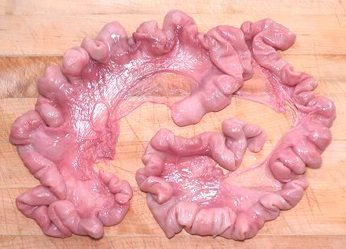
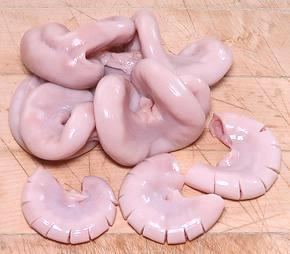
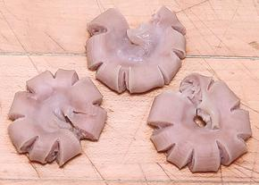

Pig Uterus

Yes, even this part of the pig is enjoyed on the dinner plate. It
doesn't at all resemble a human uterus, because it's designed to
manufacture a whole slew of piglets. The human uterus is designed
for just one, though it can sometimes safely accomodate two, and
with rapidly declining safety beyond that. Pig Uterus is different
in shape and texture from any other part of the pig, so it is
handled rather differently from other parts.
More on Cuts of Pork.
Buying:
this is not a problem here in Southern
California, as our huge Asian markets are usually well supplied.
It can be had at a fairly low cost, as not many know how to cook
it, or want to try.
Yield:
Prepared and fully cooked, you will end up with
about 40% the weight you started with. Recipes should list the starting
weight unless specifically stated otherwise.
Clean & Cut

Because of it's unique characteristics, and especially it's smoothness
and hollowness, the Uterus is cut quite differently from other parts of
the pig.
- Rinse the Uterus thoroughly.
- Cut away as much of the thin membrane as you can so you just have
the tubular part.
- Cut the tubular part into lengths of about 2 inch crescents, then
make many cuts on from the convex side extending through the wall
into the interior tube. This will allow quicker cooking and will
give some purchase for sauces it may be cooked in, or for dips if
served as an appetizer.
Cooking

Pig uterus is usually cooked in a sauce, but it can be served also as
an appetizer with dips. This is a tough item with a somewhat crunchy
bite. Thee flavor stays the same even throug a couple of hours simmering.
Uterus is first edible after simmering 25 to 30 minutess, and still
has quite a bit of crunch. It becomes less chewy with further simmering,
and by 1 hour it is fairly easy to eat. The crunchiness will have faded
a lot, but most people will probably prefer the texture at about 1 hour.
After 1 hour it continues to become more tender, but the change is not
great.
ap_uteruz 200105 - www.clovegarden.com
©Andrew Grygus - agryg@clovegaden.com - Photos on this
page not otherwise credited are © cg1 -
Linking to and non-commercial use of this page permitted